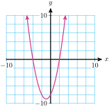
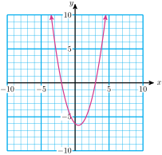
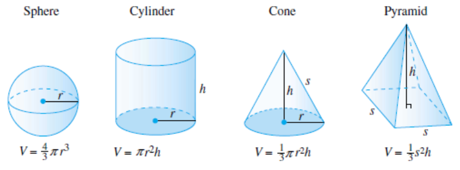
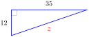
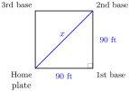
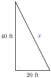

Enclose \(-6\) in parentheses, and follow the order of operations.
Square first, then multiply by 2: \(~~2x^2=2(-6)^2=2(36)=72\)
Square first, then subtract from 2: \(~~2-x^2=2-(-6)^2=2-36=-34\)
Multiply by 2 first, then square: \(~~(2x)^2=[2(-6)]^2=[-12]^2=144\)
Subtract from 2 first, then square: \(~~(2-x)^2=[2-(-6)]^2=[8]^2=64\)
ExampleA.3.2.
Make a table of values for \(y=x^2+2x-8\text{,}\) and graph the equation.
Solution.
We plot the points from the table and connect them with a smooth curve.
\(x\)
\(y\)
\(\hphantom{0000}\)
\(-5\)
\(7\)
\((-5)^2+2(-5)-8=25-10-8\)
\(-4\)
\(0\)
\((-4)^2+2(-4)-8=16-8-8\)
\(-3\)
\(-5\)
\((-3)^2+2(-3)-8=9-6-8\)
\(-2\)
\(-8\)
\((-2)^2+2(-2)-8=4-4-8\)
\(-1\)
\(-9\)
\((-1)^2+2(-1)-8=1-2-8\)
\(0\)
\(-8\)
\((0)^2+2(0)-8=0+0-8\)
\(1\)
\(-5\)
\((1)^2+2(1)-8=1+2-8\)
\(2\)
\(0\)
\((2)^2+2(2)-8=4+4-8\)
\(3\)
\(7\)
\((3)^2+2(3)-8=9+6-8\)

CheckpointA.3.3.
Evaluate for \(w=-9\)
\(\displaystyle (2w)^2\)
\(\displaystyle 36-(2w)^2\)
\(\displaystyle -2(4-w)^2\)
\(\displaystyle 2-w^2\)
Answer.
\(\displaystyle 324\)
\(\displaystyle -288\)
\(\displaystyle -338\)
\(\displaystyle -79\)
CheckpointA.3.4.
Evaluate for \(a=-3,~b=-4\)
\(\displaystyle ab^2\)
\(\displaystyle a-b^2\)
\(\displaystyle (a-b^2)^2\)
\(\displaystyle ab(a^2-b^2)\)
Answer.
\(\displaystyle -48\)
\(\displaystyle -19\)
\(\displaystyle 361\)
\(\displaystyle -84\)
CheckpointA.3.5.
Evaluate for \(h=-2,~g=-5\)
\(\displaystyle h^2-2hg+g^2\)
\(\displaystyle (h-g)^2\)
\(\displaystyle h^2-g^2\)
\(\displaystyle (h-g)(h+g)\)
Answer.
\(\displaystyle 9\)
\(\displaystyle 9\)
\(\displaystyle -21\)
\(\displaystyle -21\)
CheckpointA.3.6.
Make a table of values for \(y=x^2-x-6\text{,}\) and graph the equation.
\(x\)
\(y\)
\(-3\)
\(\hphantom{0000}\)
\(-2\)
\(\hphantom{0000}\)
\(-1\)
\(\hphantom{0000}\)
\(0\)
\(\hphantom{0000}\)
\(1\)
\(\hphantom{0000}\)
\(2\)
\(\hphantom{0000}\)
\(3\)
\(\hphantom{0000}\)
\(4\)
\(\hphantom{0000}\)
\(5\)
\(\hphantom{0000}\)
Answer.
\(x\)
\(y\)
\(-3\)
\(6\)
\(-2\)
\(0\)
\(-1\)
\(-4\)
\(0\)
\(-6\)
\(1\)
\(-6\)
\(2\)
\(-4\)
\(3\)
\(0\)
\(4\)
\(6\)
\(5\)
\(14\)

SubsubsectionA.3.1.2Use square roots
The simplest quadratic equations have the form
\begin{equation*}
ax^2+c=0
\end{equation*}
They are missing a linear term, \(bx\text{,}\) and are not difficult to solve.
ExampleA.3.7.
Solve \(~3y^2-40=35~\) by extraction of roots.
Solution.
We isolate the quadratic term, \(y^2\text{,}\) and then extract roots.
\begin{align*}
3y^2-40 \amp = 35 \amp \amp \blert{\text{Add 40 to both sides.}}\\
3y^2 \amp = 75 \amp \amp \blert{\text{Divide both sides by 3.}}\\
y^2 \amp = 25 \amp \amp \blert{\text{Take the square root of both sides.}}\\
y \amp = \pm \sqrt{25} \amp \amp \blert{\text{Simplify.}}\\
y \amp = \pm 5 \amp \amp \blert{\text{Remeber that a positive number has two square roots.}}
\end{align*}
The solutions are \(5\) and \(-5\text{.}\)
CheckpointA.3.8.
Solve by extraction of roots.
\(\displaystyle 98=2a^2\)
\(\displaystyle 0=3n^2-15\)
\(\displaystyle 144 + \dfrac{h^2}{9} = 169\)
\(\displaystyle 12-5v^2=2\)
Answer.
\(\displaystyle \pm 7\)
\(\displaystyle \pm \sqrt{5}\)
\(\displaystyle \pm 15\)
\(\displaystyle \pm \sqrt{2}\)
SubsubsectionA.3.1.3Use geometric formulas
It may seem difficult to measure the inside of a round object like a sphere or a cone in cubic units, but you can imagine filling the object with liquid and then pouring the liquid into a box to measure its volume.

ExampleA.3.9.
A cone is 16 cm tall and its volume is 500 cm\(^3\text{.}\) What is the radius of the base of the cone?
Solution.
We substitute \(h=16\) and \(V=500\) into the formula for the volume of a cone, and solve for \(r\text{.}\)
\begin{align*}
\dfrac{1}{3} \pi r^2(\alert{16}) \amp = \alert{500} \amp \amp \blert{\text{Multiply both sides by 3.}}\\
16 \pi r^2 \amp = 1500 \amp \amp \blert{\text{Divide both sides by}~16 \pi.}\\
r^2 \amp = 29.842 \amp \amp \blert{\text{Take the square root of both sides.}}\\
r \amp = 5.46
\end{align*}
The radius of the cone is 5.46 cm.
CheckpointA.3.10.
A cylindrical syringe holds 100 cc (cubic centimeters) of fluid. If the syringe is 10 centimeters long, what is its radius?
Answer.
1.78 cm
ExampleA.3.11.
The diameter of a spherical wax candle is 5 inches. What is the volume of wax in the candle?
Solution.
The radius of the candle is half its diameter, or 2.5 inches. The volume of the candle is
Find the volume of a cylindrical water tank whose diameter is 20 feet and whose height is 20 feet.
Answer.
6283.2 cubic feet
CheckpointA.3.13.
The diameter of the Earth is about 7920 miles. Find its volume.
Answer.
About 260,120,000,000 cubic miles
SubsubsectionA.3.1.4Use the Pythagorean theorem
If \(a\) and \(b\) are the lengths of the legs of a right triangle and \(c\) is the length of the hypotenuse, then
\begin{equation*}
a^2 + b^2 = c^2
\end{equation*}
Note that the theorem is true only for right triangles -- ones that have a 90\(\degree\) angle.
ExampleA.3.14.
Find the unknown side in the right triangle.

Solution.
The unknown side is the hypotenuse, so we apply the Pythagorean theorem with \(c=z,~a=12\text{,}\) and \(b=35\text{.}\)
\begin{align*}
a^2 + b^2 \amp = c^2\\
12^2+35^2 \amp =z^2 \amp \amp \blert{\text{Simplify the left side.}}\\
1369 \amp = z^2 \amp \amp \blert{\text{Take the square root of both sides.}}\\
\pm 37 \amp = z
\end{align*}
The length of the hypotenuse is a positive number, so \(z=37\text{.}\)
ExampleA.3.15.
A 25-foot ladder is placed against a wall so that its foot is 7 feet from the base of the wall. How far up the wall does the ladder reach?
Solution.
We make a sketch and label the known dimensions, calling the unknown height \(h\text{.}\) The ladder forms the hypotenuse of a right triangle, so we apply the Pythagorean theorem, substituting 25 for \(c\text{,}\) 7 for \(b\text{,}\) and \(h\) for \(a\text{.}\)
\begin{align*}
h^2 + 49 \amp = 625 \amp \amp \blert{\text{Subtract 49 from both sides.}}\\
h^2 \amp =576 \amp \amp \blert{\text{Extract roots.}}\\
h \amp =\pm \sqrt{576} \amp \amp \blert{\text{Simplify the radical.}}\\
h = \amp \pm 24
\end{align*}
The height must be a positive number, so the ladder reaches 24 feet up the wall.
CheckpointA.3.16.
A baseball diamond is a square whose sides are 90 feet long. Find the straight-line distance from home plate to second base.
Make a sketch of the situation and label a right triangle.
Write an equation and solve.
Answer.

127.28 ft
CheckpointA.3.17.
How long a wire is needed to stretch from the top of a 40-foot telephone pole to a point on the ground 20 feet from the base of the pole?
Make a sketch of the situation and label a right triangle.
Write an equation and solve.
Answer.

44.72 ft
SubsectionA.3.2Intercepts, Solutions, and Factors
In this lesson we review the skills we need to solve quadratic equations by factoring.
SubsubsectionA.3.2.1Multiply binomials
ExampleA.3.18.
Expand the product \(~(2x-3)(x-6)~\text{.}\)
Solution.
Multiply each term of the first binomial be each term of the second binomial. This gives four multiplications, often denoted by "FOIL," which stands for First terms, Outside terms, Inside terms, and Last terms.
To factor the trinomial \(x^2+bx+c\text{,}\) we look for two numbers \(p\) and \(q\) whose product \(pq\) is the constant term and whose sum \(p+q\) is the coefficient of the middle term.
For this example we must find two numbers \(p\) and \(q\) for which \(pq=20\) and \(p+q=-12\text{.}\) These two conditions tell us that \(p\) and \(q\) must both be negative. We start by listing all the ways to factor \(20\) with negative factors:
This time the product \(pq\) must be negative, so \(p\) and \(q\) must have opposite signs, one positive and one negative. There are only two ways to factor \(15\text{,}\) either \(1\) times \(15\) or \(3\) times \(5\text{.}\) We just "guess" that the second factor is negative, and check \(p+q\) for each possibility:
The middle term we want is \(2x\text{,}\) not \(-2x\text{,}\) so we change the signs of \(p\) and \(q\text{:}\) we use \(-3\) and \(+5\text{.}\) The correct factorization is
Ralph and Wanda together weigh 320 pounds. If Ralph weighs \(x\) pounds, how much does Wanda weigh?
Solution.
We subtract Ralph’s weight from the total; the remainder is Wanda’s weight: \(320-x\) pounds
ExampleA.3.34.
Delbert and Francine live 24 miles apart on Route 30. They meet at a cafe between their houses. If Delbert drove \(d\) miles, how far did Francine drive?
Solution.
We subtract Delbert’s distance from the total; the remainder is Francine’s distance: \(24-d\) miles
ExampleA.3.35.
Three eggs and two slices of buttered toast contain 526 calories. If one egg contains \(c\) calories, how many calories are in a slice of buttered toast?
Solution.
We subtract the calories in three eggs from the total; the remainder is the number of calories in two slices of toast, so one slice has half that many calories: \(~\frac{1}{2}(526-3c)\)
ExampleA.3.36.
The perimeter of a large rectangular playground is 124 yards. If its width is \(w\) yards, what is its length?
Solution.
We subtract twice the length from the perimeter; the remainder is twice the width, so the width is half that: \(~\frac{1}{2}(124-2w) = 62-w\) yards
CheckpointA.3.37.
Garth and Taylor together made $86,000 last year. If Garth made \(d\) dollars, how much did Taylor make?
Answer.
\(86,000 - d\) dollars
CheckpointA.3.38.
Six coffees and four pastries cost the office manager $21. If a pastry costs \(x\) dollars, how much does a coffee cost?
Answer.
\(\dfrac{1}{6}(21-4x)\) dollars
CheckpointA.3.39.
The vertex angle of an isosceles triangle is \(v\) degrees. What is the measure of each of the two base angles?
Answer.
\(\dfrac{1}{2}(180-v)\) degrees
CheckpointA.3.40.
The perimeter of a rectangular swimming pool is 260 feet. If the length of the pool is \(L\) feet, what is its width?
Answer.
\(\dfrac{1}{2}(260-2L)\) feet
SubsectionA.3.3Graphing Parabolas
SubsubsectionA.3.3.1Find the average of two numbers
The average of two numbers lies half-way between them on a number line. To find their average, we take one-half of their sum. That is, the average of \(p\) and \(q\) is
In the formula above, note that the coefficient of \(x\) is \(2p\) and the constant term is \(p^2\text{.}\) In this example, \(2p=6\) and \(p^2=9\text{,}\) so \(p=\alert{3}\text{,}\) and
Write \(~x^2+12x+36~\) as the square of a binomial.
Answer.
\((x+6)^2\)
CheckpointA.3.63.
Write \(~x^2-26x+169~\) as the square of a binomial.
Answer.
\((x-13)^2\)
CheckpointA.3.64.
Write \(~a^2-9a+\dfrac{81}{4}~\) as the square of a binomial.
Answer.
\((a-\dfrac{9}{2})^2\)
CheckpointA.3.65.
Write \(~t^2-\dfrac{4}{3}t+\dfrac{4}{9}~\) as the square of a binomial.
Answer.
\((t-\dfrac{2}{3})^2\)
To solve a quadratic equation by completing the square, we often have to work with fractions.
SubsubsectionA.3.4.2Multiply fractions
To multiply two fractions together, we multiply their numerators together, and multiply their denominators together. We can divide out any common factors in numerator and denominator before we multiply.
Step2: Build each fraction to a denominator of 30. The building factor for the first fraction is \(\blert{3}\text{,}\) and \(\blert{5}\) for the second fraction.